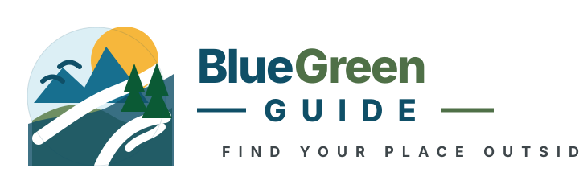

Field Guide & User Manual
Learn how to use the map, search, filters, launch cards, launch details, verification notes, and mobile layout.

Documentation
Field guide, user manual, release notes, and roadmap for the v1.0 curated launch map proof of concept.
Learn how to use the map, search, filters, launch cards, launch details, verification notes, and mobile layout.
A short practical guide for first-time users.
Summary of the v1.0 release scope and what belongs in future phases.
Phase-by-phase plan for growing from a curated launch map to richer planning tools.